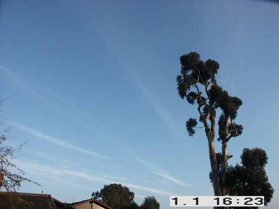
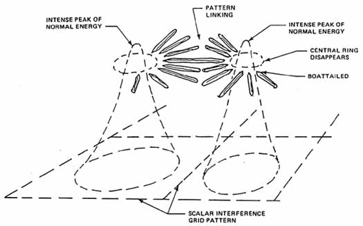

Looking East. The radial spoke that can be faintly seen
coming out of the top of the
eucalyptus tree went all the way across the sky to join up with the spoke
from the radial to the West in the next photo. There were no other clouds
in the sky.
